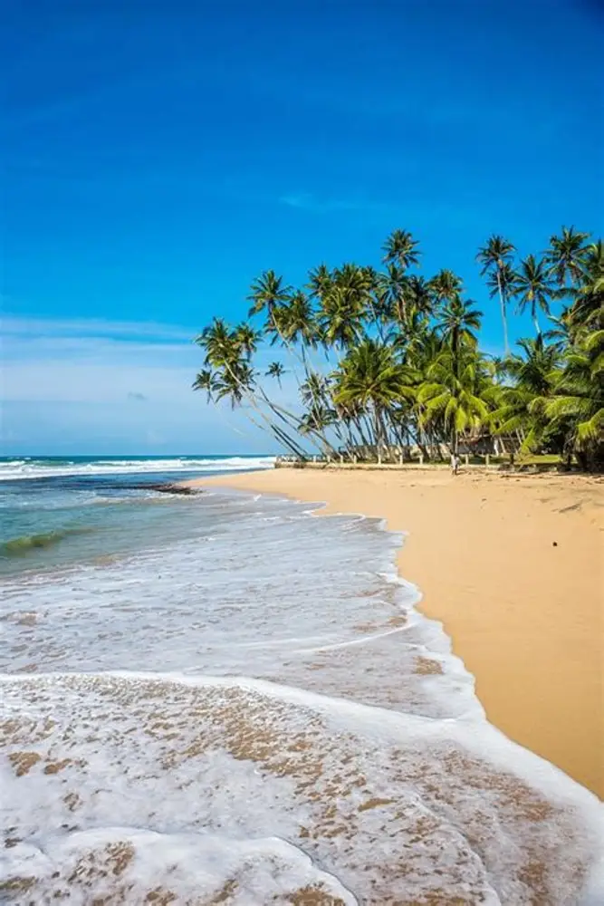

Passionate Sri Lankan travel designers, naturalists, and cultural custodians creating transformative voyages since 2012.
"Serendib" was the historic Persian designation for Sri Lanka, which gifted the English language with the word serendipity: the occurrence of finding valuable or delightful things by fortunate chance.
Founded by Colombo natives and field wildlife researchers, Serendib Journeys was founded to elevate Sri Lankan tourism. We believe travel should directly benefit local village communities, safeguard fragile ecosystems, and showcase the profound hospitality of our people.
Over the past 14 years, our certified chauffeur guides, marine biologists, and hospitality teams have guided over 14,000 discerning global travelers across every province of Sri Lanka.

Official Sri Lanka Tourism Development Authority (SLTDA) License TA/2026/09 with comprehensive traveler liability coverage.
We eliminate single-use plastics across our vehicle fleets and donate 5% of trip revenue to mangrove reforestation along the Madu Ganga wetland.
Every chauffeur is certified by the national tourist board, fluent in English, and acts as your trusted island insider, navigator, and protector.